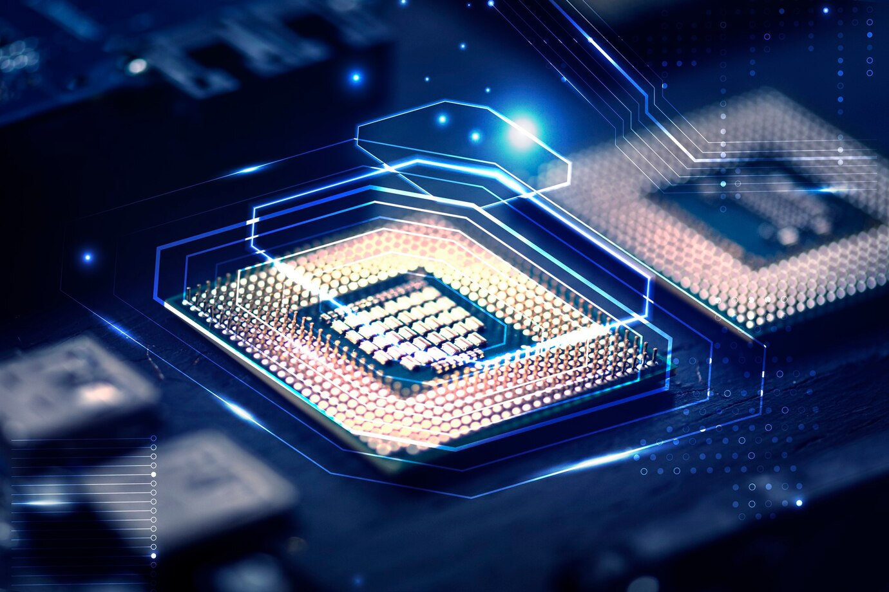

PROCESADORES
Intel establece el estándar de la industria para el desempeño e innovación de procesadores, el fortalecimiento de las laptops, las desktops, las estaciones de trabajo y los servidores, para uso empresarial y personal, gaming inmersivo, creación de contenido, Internet de las cosas, inteligencia artificial y más. Explora la variedad de opciones aquí
PLACA MADRE
En computación, la placa madre, placa principal, placa base o tarjeta madre (del inglés: motherboard) es la tarjeta de circuito integrado principal del sistema informático, a la que se acoplan los demás componentes que constituyen el computador.

DISCO DURO
Un disco duro o disco rígido es un dispositivo de almacenamiento de datos no volátil que emplea un sistema de grabación magnética para almacenar datos digitales de forma rápida y segura.

TARJETA DE VIDEO
La tarjeta gráfica, también conocida como tarjeta de video, es un componente electrónico que está integrado en la placa base del ordenador, o que también puede instalarse después con la finalidad de aumentar la capacidad del equipo. Esta tarjeta logra procesar los datos provenientes del CPU y los transforma en información visual en un dispositivo de salida, como un monitor.

El procesador es una pastilla de silicio que va colocada en el socket sobre la placa madre dentro del gabinete de la computadora de escritorio, la diferencia en una portátil es que está directamente soldado. El procesador está cubierto de algo que llamamos encapsulado, y de lo cual existen 3 tipos: PGA, LGA y BGA.

Plataforma es un concepto con varios usos. Por lo general se trata de una base que se halla a una cierta altura o de aquello que brinda un soporte, ya sea físico o simbólico. El uso más habitual del término virtual, por su parte, está vinculado a lo que existe de manera aparente o simulada, y no físicamente.